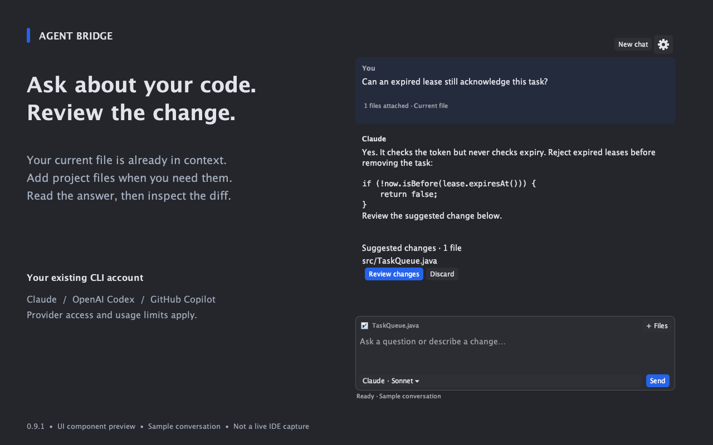
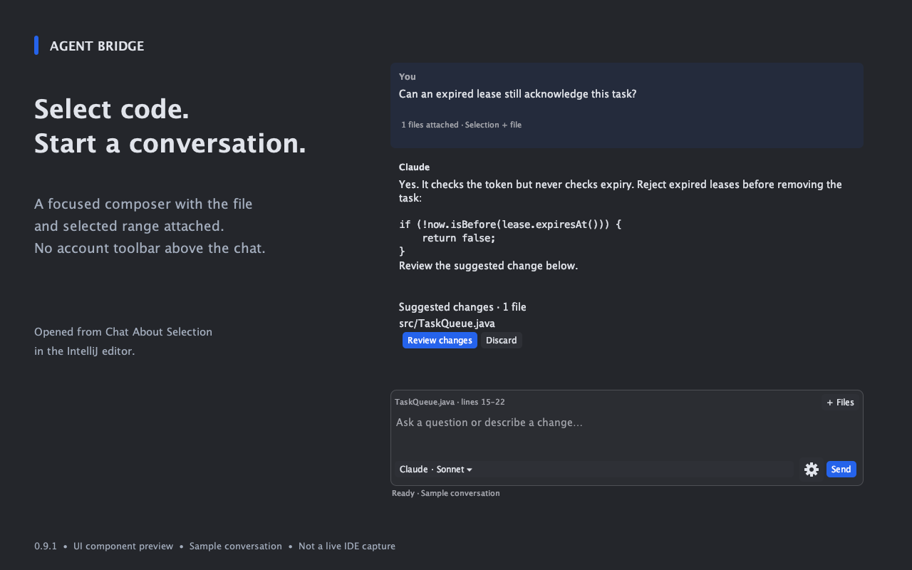
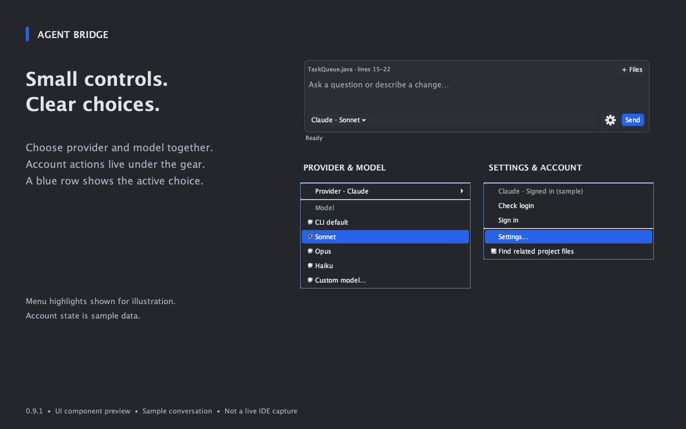
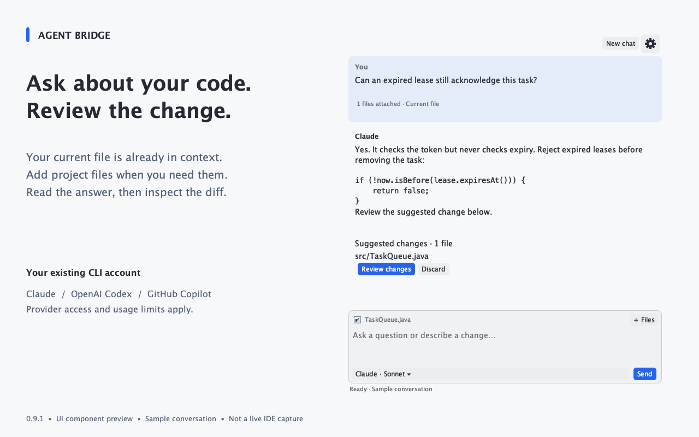

Start where you are
The current file and unsaved buffer can be included. Attach project files and folders when the question needs more context.
Agent Bridge · IntelliJ IDEA
Chat with Claude, OpenAI Codex or GitHub Copilot through the CLI account you already use, inside your IDE.
Version 0.9.1 · component-preview gallery
The current file and unsaved buffer can be included. Attach project files and folders when the question needs more context.
Select code and open a focused conversation beside the editor. Small controls leave space for the question and answer.
Supported suggestions open an IntelliJ diff. Apply the reviewed proposal and use Undo if needed.
Read the complete setup and troubleshooting guide →


| Provider | Authentication | Model choice |
|---|---|---|
| Claude | Installed Claude CLI’s sign-in flow | Default, Sonnet, Opus, Haiku or custom |
| OpenAI Codex | CLI app-server browser flow; device-code alternative | Choices from the CLI model catalog or custom |
| GitHub Copilot | Installed Copilot CLI’s login flow | Default, Auto or custom; verify support with your CLI/account |

Each installation uses its own local CLI login or API configuration. No maintainer credentials are bundled. Provider charges and usage limits still apply.
Switch providers or models and choose Continue with context to carry recent completed exchanges, or Start fresh. The next request captures current editor buffers again.